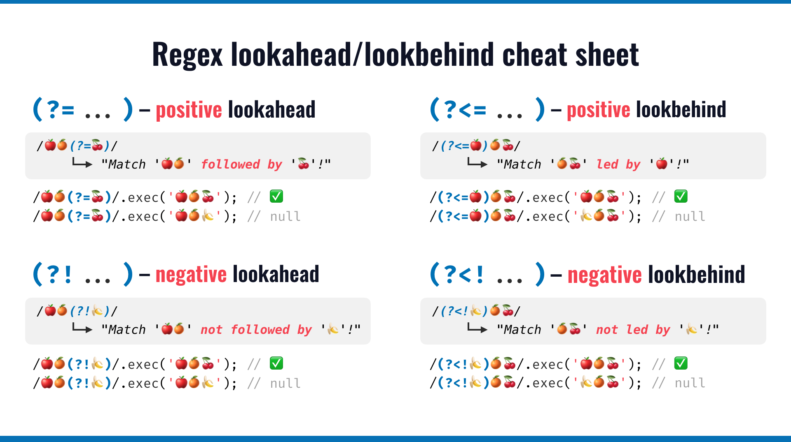
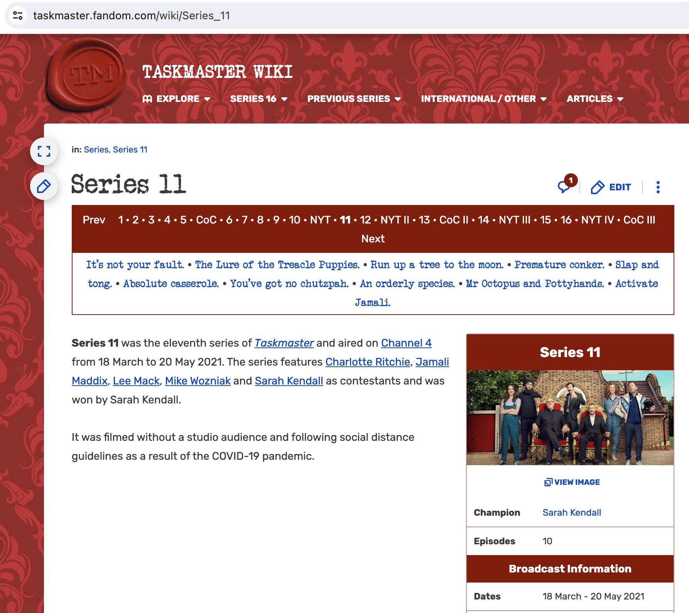
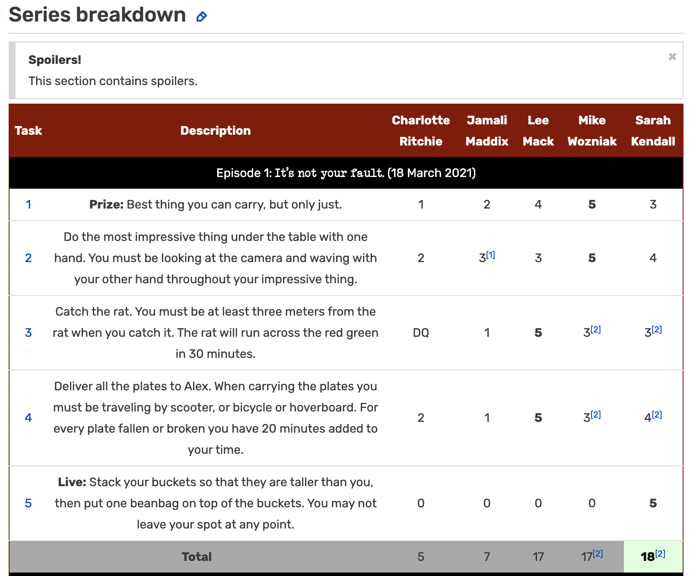

print("a\nb")[1] "a\nb"cat("a\nb")a
bA regular expression … is a sequence of characters that define a search pattern. Usually such patterns are used by string searching algorithms for “find” or “find and replace” operations on strings, or for input validation. It is a technique developed in theoretical computer science and formal language theory. [From https://en.wikipedia.org/wiki/Regular_expression]
Regular expressions are composed of two types of characters:
*) are called metacharacters
The metacharacters allow for advanced pattern matching in finding regular expressions.
Many of the ideas below are taken from Jenny Bryan’s STAT545 class.
install.packages("tidyverse") and also loaded via library(tidyverse). Of course, you can also install or load it individually.
str_. Auto-complete is your friend.tidyr package Especially useful for functions that split one character vector into many and vice versa: separate(), unite(), extract().nchar(), strsplit(), substr(), paste(), paste0().glue package is fantastic for string interpolation. If stringr::str_interp() doesn’t get your job done, check out the glue package.There are some special characters in R that cannot be directly coded in a string. For example, let’s say you specify your pattern with single quotes and you want to find countries with the single quote '. You would have to “escape” the single quote in the pattern, by preceding it with \, so it is clear that it is not part of the string-specifying machinery.
There are other characters in R that require escaping, and this rule applies to all string functions in R, including regular expressions. See here for a complete list of R escape sequences.
\': single quote. You don’t need to escape single quote inside a double-quoted string, so we can also use " ' " in the previous example.\": double quote. Similarly, double quotes can be used inside a single-quoted string, i.e. ' " '.\n: newline.\r: carriage return.\t: tab character.Note:
cat()andprint()handle escape sequences differently, if you want to print a string out with the interpretation of the sequences above, usecat().
Quantifiers specify how many repetitions of the pattern.
*: matches at least 0 times.+: matches at least 1 times.?: matches at most 1 times.{n}: matches exactly n times.{n,}: matches at least n times.{n,m}: matches between n and m times.(strings <- c("a", "ab", "acb", "accb", "acccb", "accccb"))[1] "a" "ab" "acb" "accb" "acccb" "accccb"grep("ac*b", strings, value = TRUE)[1] "ab" "acb" "accb" "acccb" "accccb"grep("ac*b", strings, value = FALSE)[1] 2 3 4 5 6grep("ac+b", strings, value = TRUE)[1] "acb" "accb" "acccb" "accccb"grep("ac?b", strings, value = TRUE)[1] "ab" "acb"grep("ac{2}b", strings, value = TRUE)[1] "accb"grep("ac{2}b", strings, value = FALSE)[1] 4grep("ac{2,}b", strings, value = TRUE)[1] "accb" "acccb" "accccb"grep("ac{2,3}b", strings, value = TRUE)[1] "accb" "acccb"^: matches the start of the string.$: matches the end of the string.\b: matches the empty string at either edge of a word. Don’t confuse it with ^ $ which marks the edge of a string.\B: matches the empty string provided it is not at an edge of a word..: matches any single character, as shown in the first example.[...]: a character list, matches any one of the characters inside the square brackets. We can also use - inside the brackets to specify a range of characters.[^...]: an inverted character list, similar to [...], but matches any characters except those inside the square brackets.\: suppress the special meaning of metacharacters in regular expression, i.e. $ * + . ? [ ] ^ { } | ( ) \, similar to its usage in escape sequences. Since \ itself needs to be escaped in R, we need to escape these metacharacters with double backslash like \\$.|: an “or” operator, matches patterns on either side of the |.(...): grouping in regular expressions. This allows you to retrieve the bits that matched various parts of your regular expression so you can alter them or use them for building up a new string. Each group can than be refer using \\N, with N being the No. of (...) used. This is called backreference.(strings <- c("^ab", "ab", "abc", "abd", "abe", "ab 12"))[1] "^ab" "ab" "abc" "abd" "abe" "ab 12"grep("ab.", strings, value = TRUE)[1] "abc" "abd" "abe" "ab 12"grep("ab[c-e]", strings, value = TRUE)[1] "abc" "abd" "abe"grep("ab[^c]", strings, value = TRUE)[1] "abd" "abe" "ab 12"grep("^ab", strings, value = TRUE)[1] "ab" "abc" "abd" "abe" "ab 12"grep("\\^ab", strings, value = TRUE)[1] "^ab"grep("abc|abd", strings, value = TRUE)[1] "abc" "abd"gsub("(ab) 12", "\\1 34", strings)[1] "^ab" "ab" "abc" "abd" "abe" "ab 34"Character classes allow specifying entire classes of characters, such as numbers, letters, etc. There are two flavors of character classes, one uses [: and :] around a predefined name inside square brackets and the other uses \ and a special character. They are sometimes interchangeable.
[:digit:] or \d: digits, 0 1 2 3 4 5 6 7 8 9, equivalent to [0-9].\D: non-digits, equivalent to [^0-9].[:lower:]: lower-case letters, equivalent to [a-z].[:upper:]: upper-case letters, equivalent to [A-Z].[:alpha:]: alphabetic characters, equivalent to [[:lower:][:upper:]] or [A-z].[:alnum:]: alphanumeric characters, equivalent to [[:alpha:][:digit:]] or [A-z0-9].\w: word characters, equivalent to [[:alnum:]_] or [A-z0-9_].\W: not word, equivalent to [^A-z0-9_].[:xdigit:]: hexadecimal digits (base 16), 0 1 2 3 4 5 6 7 8 9 A B C D E F a b c d e f, equivalent to [0-9A-Fa-f].[:blank:]: blank characters, i.e. space and tab.[:space:]: space characters: tab, newline, vertical tab, form feed, carriage return, space.\s: space, \S: not space.[:punct:]: punctuation characters, ! ” # $ % & ’ ( ) * + , - . / : ; < = > ? @ [ ] ^ _ ` { | } ~.[:graph:]: graphical (human readable) characters: equivalent to [[:alnum:][:punct:]].[:print:]: printable characters, equivalent to [[:alnum:][:punct:]\\s].[:cntrl:]: control characters, like \n or \r, [\x00-\x1F\x7F].Note:
* [:...:] has to be used inside square brackets, e.g. [[:digit:]].
* \ itself is a special character that needs escape, e.g. \\d. Do not confuse these regular expressions with R escape sequences such as \t.
I have found that the best way to truly understand regular expressions is to work through as many examples as possible (actually, maybe this is true about learning anything new!). For the following examples, try to figure out the solution on your own before looking at the footnote which contains the solution.
meter in “The cemetery is 1 meter from the stop sign.” Also match Meter in “The cemetery is 1 Meter from the stop sign.”string <- c("The cemetery is 1 meter from the stop sign.", "The cemetery is 1 Meter from the stop sign.")
str_extract(string, "(?i)\\bmeter\\b")[1] "meter" "Meter"The “or” operator, | has the lowest precedence and parentheses have the highest precedence, which means that parentheses get evaluated before “or”.
Below are a handful of string characters that represent genomic sequences which were measured in an RNA Sequencing dataset. The task below is to find intergenic regions (IGR) and identify which coding sequences (CDS) bookend the intergenic regions. Note that IGRs do not code for proteins while CDSs do. Additionally, AS refers to anti-sense which identifies the genomic sequence in the opposite orientation (e.g., CGGATCC vs CCTAGGC). [The code below was written by Madison Hobbs, Scripps ’19.]
allCounts <- data.frame(Geneid = c("CDS:b2743:pcm:L-isoaspartate_protein_carboxylmethyltransferase_type_II:cds2705:-:626:NC_000913.3",
"CDS:b2764:cysJ:sulfite_reductase2C_alpha_subunit2C_flavoprotein:cds2726:-:1799:NC_000913.3",
"IGR:(CDS,b1594,mlc,glucosamine_anaerobic_growth_regulon_transcriptional_repressor3B_autorepressor,cds1581,-,1220/CDS,b1595,ynfL,LysR_family_putative_transcriptional_regulator,cds1582,-,893):+:945:NC_000913.3",
"AS_IGR:(CDS,b0008,talB,transaldolase_B,cds7,+,953/CDS,b0009,mog,molybdochelatase_incorporating_molybdenum_into_molybdopterin,cds8,+,587):+:639:NC_000913.3",
"IGR:(CDS,b1808,yoaA,putative_ATP-dependent_helicase2C_DinG_family,cds1798,-,1910/CDS,b1809,yoaB,putative_reactive_intermediate_deaminase,cds1799,+,344):+:396:NC_000913.3"))
allCounts$GeneidBackup = allCounts$GeneidFirst, it is important to identify which are IGR, CDS, and anti-sense.
feature
1 CDS
2 CDS
3 IGR
4 AS_IGR
5 IGR
rest
1 b2743
2 b2764
3 (CDS,b1594,mlc,glucosamine_anaerobic_growth_regulon_transcriptional_repressor3B_autorepressor,cds1581,-,1220/CDS,b1595,ynfL,LysR_family_putative_transcriptional_regulator,cds1582,-,893)
4 (CDS,b0008,talB,transaldolase_B,cds7,+,953/CDS,b0009,mog,molybdochelatase_incorporating_molybdenum_into_molybdopterin,cds8,+,587)
5 (CDS,b1808,yoaA,putative_ATP-dependent_helicase2C_DinG_family,cds1798,-,1910/CDS,b1809,yoaB,putative_reactive_intermediate_deaminase,cds1799,+,344)
GeneidBackup
1 CDS:b2743:pcm:L-isoaspartate_protein_carboxylmethyltransferase_type_II:cds2705:-:626:NC_000913.3
2 CDS:b2764:cysJ:sulfite_reductase2C_alpha_subunit2C_flavoprotein:cds2726:-:1799:NC_000913.3
3 IGR:(CDS,b1594,mlc,glucosamine_anaerobic_growth_regulon_transcriptional_repressor3B_autorepressor,cds1581,-,1220/CDS,b1595,ynfL,LysR_family_putative_transcriptional_regulator,cds1582,-,893):+:945:NC_000913.3
4 AS_IGR:(CDS,b0008,talB,transaldolase_B,cds7,+,953/CDS,b0009,mog,molybdochelatase_incorporating_molybdenum_into_molybdopterin,cds8,+,587):+:639:NC_000913.3
5 IGR:(CDS,b1808,yoaA,putative_ATP-dependent_helicase2C_DinG_family,cds1798,-,1910/CDS,b1809,yoaB,putative_reactive_intermediate_deaminase,cds1799,+,344):+:396:NC_000913.3We keep only the IGR and AS_IGR strings, and we separate the two bookends. Note, the separation comes at the backslash.
igr <- allCounts |> filter(feature %in% c("IGR", "AS_IGR"))
igr <- igr |> tidyr::separate(GeneidBackup, c("Geneid1", "Geneid2"), sep = "[/]")
names(igr)[1] "feature" "rest" "Geneid1" "Geneid2"igr feature
1 IGR
2 AS_IGR
3 IGR
rest
1 (CDS,b1594,mlc,glucosamine_anaerobic_growth_regulon_transcriptional_repressor3B_autorepressor,cds1581,-,1220/CDS,b1595,ynfL,LysR_family_putative_transcriptional_regulator,cds1582,-,893)
2 (CDS,b0008,talB,transaldolase_B,cds7,+,953/CDS,b0009,mog,molybdochelatase_incorporating_molybdenum_into_molybdopterin,cds8,+,587)
3 (CDS,b1808,yoaA,putative_ATP-dependent_helicase2C_DinG_family,cds1798,-,1910/CDS,b1809,yoaB,putative_reactive_intermediate_deaminase,cds1799,+,344)
Geneid1
1 IGR:(CDS,b1594,mlc,glucosamine_anaerobic_growth_regulon_transcriptional_repressor3B_autorepressor,cds1581,-,1220
2 AS_IGR:(CDS,b0008,talB,transaldolase_B,cds7,+,953
3 IGR:(CDS,b1808,yoaA,putative_ATP-dependent_helicase2C_DinG_family,cds1798,-,1910
Geneid2
1 CDS,b1595,ynfL,LysR_family_putative_transcriptional_regulator,cds1582,-,893):+:945:NC_000913.3
2 CDS,b0009,mog,molybdochelatase_incorporating_molybdenum_into_molybdopterin,cds8,+,587):+:639:NC_000913.3
3 CDS,b1809,yoaB,putative_reactive_intermediate_deaminase,cds1799,+,344):+:396:NC_000913.3For each of the two bookend Genes, we need to separate out the feature from the rest. Note that we write over feature1 in the second line of code below. Both of the bookends for all sequences are CDS elements.
igr$feature1 <- tidyr::separate(igr, Geneid1, c("feature1", "rest"), sep = "[,]")$feature1
igr$feature1 <- tidyr::separate(igr, feature1, c("rest", "feature1"), sep = "[()]")$feature1
igr$feature2 <- tidyr::separate(igr, Geneid2, c("feature2", "rest"), sep = "[,]")$feature2
names(igr)[1] "feature" "rest" "Geneid1" "Geneid2" "feature1" "feature2"igr feature
1 IGR
2 AS_IGR
3 IGR
rest
1 (CDS,b1594,mlc,glucosamine_anaerobic_growth_regulon_transcriptional_repressor3B_autorepressor,cds1581,-,1220/CDS,b1595,ynfL,LysR_family_putative_transcriptional_regulator,cds1582,-,893)
2 (CDS,b0008,talB,transaldolase_B,cds7,+,953/CDS,b0009,mog,molybdochelatase_incorporating_molybdenum_into_molybdopterin,cds8,+,587)
3 (CDS,b1808,yoaA,putative_ATP-dependent_helicase2C_DinG_family,cds1798,-,1910/CDS,b1809,yoaB,putative_reactive_intermediate_deaminase,cds1799,+,344)
Geneid1
1 IGR:(CDS,b1594,mlc,glucosamine_anaerobic_growth_regulon_transcriptional_repressor3B_autorepressor,cds1581,-,1220
2 AS_IGR:(CDS,b0008,talB,transaldolase_B,cds7,+,953
3 IGR:(CDS,b1808,yoaA,putative_ATP-dependent_helicase2C_DinG_family,cds1798,-,1910
Geneid2
1 CDS,b1595,ynfL,LysR_family_putative_transcriptional_regulator,cds1582,-,893):+:945:NC_000913.3
2 CDS,b0009,mog,molybdochelatase_incorporating_molybdenum_into_molybdopterin,cds8,+,587):+:639:NC_000913.3
3 CDS,b1809,yoaB,putative_reactive_intermediate_deaminase,cds1799,+,344):+:396:NC_000913.3
feature1 feature2
1 CDS CDS
2 CDS CDS
3 CDS CDSAs CDS, it is now important to find the actual genenames for each of the IGR sequences. We also keep each element’s bnum which represents a unique gene identifier in E. coli.
bnum, genename, rna.name act as place holders for the types of elements that we will need to identify the bookends of the IGRs.
bnum = "b[0-9]{4}"
bnum[1] "b[0-9]{4}"genename = ",[a-z]{3}[A-Z,]."
rna.name = ",rna[0-9].."igr$start.gene <- dplyr::case_when(
igr$feature1 == "CDS" ~ stringr::str_extract(igr$Geneid1, genename),
TRUE ~ stringr::str_extract(igr$Geneid1, rna.name))
igr$end.gene <- dplyr::case_when(
igr$feature2 == "CDS" ~ stringr::str_extract(igr$Geneid2, genename),
TRUE ~ stringr::str_extract(igr$Geneid2, rna.name))
igr$start.bnum <- dplyr::case_when(
igr$feature1 == "CDS" ~ stringr::str_extract(igr$Geneid1, bnum),
TRUE ~ "none")
igr$end.bnum <- dplyr::case_when(
igr$feature2 == "CDS" ~ stringr::str_extract(igr$Geneid2, bnum),
TRUE ~ "none")
igr <- igr |> tidyr::separate(start.gene, into = c("comma", "start.gene"), sep = "[,]") |>
dplyr::select(-comma) |>
tidyr::separate(end.gene, into = c("comma", "end.gene"), sep = "[,]") |>
dplyr::select(-comma)
names(igr) [1] "feature" "rest" "Geneid1" "Geneid2" "feature1"
[6] "feature2" "start.gene" "end.gene" "start.bnum" "end.bnum" igr feature
1 IGR
2 AS_IGR
3 IGR
rest
1 (CDS,b1594,mlc,glucosamine_anaerobic_growth_regulon_transcriptional_repressor3B_autorepressor,cds1581,-,1220/CDS,b1595,ynfL,LysR_family_putative_transcriptional_regulator,cds1582,-,893)
2 (CDS,b0008,talB,transaldolase_B,cds7,+,953/CDS,b0009,mog,molybdochelatase_incorporating_molybdenum_into_molybdopterin,cds8,+,587)
3 (CDS,b1808,yoaA,putative_ATP-dependent_helicase2C_DinG_family,cds1798,-,1910/CDS,b1809,yoaB,putative_reactive_intermediate_deaminase,cds1799,+,344)
Geneid1
1 IGR:(CDS,b1594,mlc,glucosamine_anaerobic_growth_regulon_transcriptional_repressor3B_autorepressor,cds1581,-,1220
2 AS_IGR:(CDS,b0008,talB,transaldolase_B,cds7,+,953
3 IGR:(CDS,b1808,yoaA,putative_ATP-dependent_helicase2C_DinG_family,cds1798,-,1910
Geneid2
1 CDS,b1595,ynfL,LysR_family_putative_transcriptional_regulator,cds1582,-,893):+:945:NC_000913.3
2 CDS,b0009,mog,molybdochelatase_incorporating_molybdenum_into_molybdopterin,cds8,+,587):+:639:NC_000913.3
3 CDS,b1809,yoaB,putative_reactive_intermediate_deaminase,cds1799,+,344):+:396:NC_000913.3
feature1 feature2 start.gene end.gene start.bnum end.bnum
1 CDS CDS mlc ynfL b1594 b1595
2 CDS CDS talB mog b0008 b0009
3 CDS CDS yoaA yoaB b1808 b1809A lookaround specifies a place in the regular expression that will anchor the string you’d like to match. There are four types of lookarounds: positive lookahead, positive lookbehind, negative lookahead, and negative lookbehind.
Note that the lookaround specifies a place in the string which means it does not return the details of the lookaround. Using lookarounds, you can test strings against patterns without including the lookaround pattern in the resulting match.

In the following example, we will wrangle some data scraped from the wiki site for the TV series, Taskmaster. We won’t cover the html scraping here, but I include the code for completeness.

Goal: to scrape the Taskmaster wiki into a dataframe including task, description, episode, episode name, air date, contestant, score, and series.4
results <- read_html("https://taskmaster.fandom.com/wiki/Series_11") |>
html_element(".tmtable") |>
html_table() |>
mutate(episode = ifelse(startsWith(Task, "Episode"), Task, NA)) |>
fill(episode, .direction = "down") |>
filter(!startsWith(Task, "Episode"),
!(Task %in% c("Total", "Grand Total"))) |>
pivot_longer(cols = -c(Task, Description, episode),
names_to = "contestant",
values_to = "score") |>
mutate(series = 11)results |>
select(Task, Description, episode, contestant, score, series) |>
head(10)# A tibble: 10 × 6
Task Description episode contestant score series
<chr> <chr> <chr> <chr> <chr> <dbl>
1 1 Prize: Best thing you can carry, but on… Episod… Charlotte… 1 11
2 1 Prize: Best thing you can carry, but on… Episod… Jamali Ma… 2 11
3 1 Prize: Best thing you can carry, but on… Episod… Lee Mack 4 11
4 1 Prize: Best thing you can carry, but on… Episod… Mike Wozn… 5 11
5 1 Prize: Best thing you can carry, but on… Episod… Sarah Ken… 3 11
6 2 Do the most impressive thing under the … Episod… Charlotte… 2 11
# ℹ 4 more rows Task Description episode contestant score series
1 Prize: Best thing… Episode 1… Charlotte… 1 11
1 Prize: Best thing… Episode 1… Jamali Ma… 2 11
1 Prize: Best thing… Episode 1… Lee Mack 4 11
1 Prize: Best thing… Episode 1… Mike Wozn… 5 11
1 Prize: Best thing… Episode 1… Sarah Ken… 3 11
2 Do the most… Episode 1… Charlotte… 2 11
2 Do the most… Episode 1… Jamali Ma… 3[1] 11
2 Do the most… Episode 1… Lee Mack 3 11
2 Do the most… Episode 1… Mike Wozn… 5 11
2 Do the most… Episode 1… Sarah Ken… 4 11Currently, the episode column contains entries like
"Episode 1: It's not your fault. (18 March 2021)"table(results$score)
– ✔ ✘ 0 1 2 3 3[1] 3[2] 4 4[2] 5 DQ
7 1 1 11 37 42 48 1 3 50 1 55 13 How should the scores be stored? What is the cleaning task?

Suppose we have the following string:
"3[1]"And we want to extract just the number “3”:
str_extract("3[1]", "3")[1] "3"What if we don’t know which number to extract?
str_extract("3[1]", "\\d")[1] "3"str_extract("4[1]", "\\d")[1] "4"str_extract("10[1]", "\\d")[1] "1"str_extract("10[1]", "\\d+")[1] "10"str_extract("DQ", "\\d")[1] NAstr_extract()str_extract() is an R function in the stringr package which finds regular expressions in strings of text.
str_extract("My cat is 3 years old", "cat")[1] "cat"str_extract("My cat is 3 years old", "3")[1] "3"str_extract() returns the first match; str_extract_all() allows more than one match.
str_extract("My cat is 3 years old", "cat|dog")[1] "cat"str_extract("My dog is 10 years old", "cat|dog")[1] "dog"str_extract("My dog is 10 years old, my cat is 3 years old",
"cat|dog")[1] "dog"str_extract_all("My dog is 10 years old, my cat is 3 years old",
"cat|dog")[[1]]
[1] "dog" "cat"What if I want to extract a number?
str_extract("My cat is 3 years old", "\\d")[1] "3"What will the result be for the following code?
str_extract("My dog is 10 years old", "\\d")str_extract("My dog is 10 years old", "\\d")[1] "1"The + symbol in a regular expression means “repeated one or more times”
str_extract("My dog is 10 years old", "\\d+")[1] "10"strings <- c("My cat is 3 years old", "My dog is 10 years old")
str_extract(strings, "\\d+")[1] "3" "10"What if we have multiple instances across multiple strings? We need to be careful working with lists (instead of vectors).
strings <- c("My cat is 3 years old", "My dog is 10 years old")
str_extract(strings, "\\w+")[1] "My" "My"str_extract_all(strings, "\\w+")[[1]]
[1] "My" "cat" "is" "3" "years" "old"
[[2]]
[1] "My" "dog" "is" "10" "years" "old" Currently, the episode column contains entries like:
"Episode 2: The pie whisperer. (4 August 2015)"How would I extract just the episode number?
str_extract("Episode 2: The pie whisperer. (4 August 2015)", "\\d+")[1] "2"How would I extract the episode name?
Goal: find a pattern to match: anything that starts with a :, ends with a .
Let’s break down that task into pieces.
How can we find the period at the end of the sentence? What does each of these lines of code return?
str_extract("Episode 2: The pie whisperer. (4 August 2015)", ".")[1] "E"str_extract("Episode 2: The pie whisperer. (4 August 2015)", ".+")[1] "Episode 2: The pie whisperer. (4 August 2015)"We use an escape character when we actually want to choose a period:
str_extract("Episode 2: The pie whisperer. (4 August 2015)", "\\.")[1] "."Recall the goal: find a pattern to match: anything that starts with a :, ends with a .
str_extract("Episode 2: The pie whisperer. (4 August 2015)",
":.+\\.")[1] ": The pie whisperer."(?<=) is a positive lookbehind. It is used to identify expressions which are preceded by a particular expression.
str_extract("Episode 2: The pie whisperer. (4 August 2015)",
"(?<=: ).+")[1] "The pie whisperer. (4 August 2015)"str_extract("Episode 2: The pie whisperer. (4 August 2015)",
"(?<=\\. ).+")[1] "(4 August 2015)"(?=) is a positive lookahead. It is used to identify expressions which are followed by a particular expression.
str_extract("Episode 2: The pie whisperer. (4 August 2015)",
".+(?=\\.)")[1] "Episode 2: The pie whisperer"str_extract("Episode 2: The pie whisperer. (4 August 2015)",
".+(?=:)")[1] "Episode 2"Getting everything between the : and the .
str_extract("Episode 2: The pie whisperer. (4 August 2015)",
"(?<=: ).+(?=\\.)")[1] "The pie whisperer"I want to extract just the air date. What pattern do I want to match?
str_extract("Episode 2: The pie whisperer. (4 August 2015)", ...)str_extract("Episode 2: The pie whisperer. (4 August 2015)",
"(?<=\\().+(?=\\))")[1] "4 August 2015"Currently:
# A tibble: 270 × 1
episode
<chr>
1 Episode 1: It's not your fault. (18 March 2021)
2 Episode 1: It's not your fault. (18 March 2021)
3 Episode 1: It's not your fault. (18 March 2021)
4 Episode 1: It's not your fault. (18 March 2021)
5 Episode 1: It's not your fault. (18 March 2021)
6 Episode 1: It's not your fault. (18 March 2021)
# ℹ 264 more rowsOne option:
results |>
select(episode) |>
mutate(episode_name = str_extract(episode, "(?<=: ).+(?=\\.)"),
air_date = str_extract(episode, "(?<=\\().+(?=\\))"),
episode = str_extract(episode, "\\d+"))# A tibble: 270 × 3
episode episode_name air_date
<chr> <chr> <chr>
1 1 It's not your fault 18 March 2021
2 1 It's not your fault 18 March 2021
3 1 It's not your fault 18 March 2021
4 1 It's not your fault 18 March 2021
5 1 It's not your fault 18 March 2021
6 1 It's not your fault 18 March 2021
# ℹ 264 more rowsAnother option:
results |>
separate_wider_regex(episode,
patterns = c(".+ ",
episode = "\\d+",
": ",
episode_name = ".+",
"\\. \\(",
air_date = ".+",
"\\)"))# A tibble: 270 × 3
episode episode_name air_date
<chr> <chr> <chr>
1 1 It's not your fault 18 March 2021
2 1 It's not your fault 18 March 2021
3 1 It's not your fault 18 March 2021
4 1 It's not your fault 18 March 2021
5 1 It's not your fault 18 March 2021
6 1 It's not your fault 18 March 2021
# ℹ 264 more rows“\d\d.\d\d.\d\d” will work, but it will also match 123456. It is better to replace the dot with the characters of interest: “\d\d[/.\-]\d\d[/.\-]\d\d”. Remember that a dot inside a character class is just a dot. ↩︎
“(1[012]|[1-9]):[0-5][0-9] (am|pm)”↩︎
In the former, the regex will search for “\bMary” or “Jane” or “Sue\b”. In the latter, the regex will search for “\bMary\b or”\bJane\b” or “\bSue\b”. That is, Janet will match the former but not the latter.↩︎
Thanks to Ciaran Evans at Wake Forest University for example and code, https://sta279-f23.github.io/↩︎